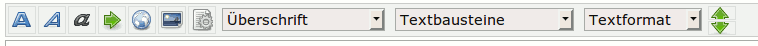
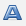
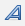
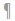
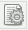

Syntax
Diese Seite gibt einen Überblick über die wichtigsten Formatierungen von Artikeln für das Wiki von ubuntuusers (die komplette Liste findet sich unter Syntax-Übersicht). Über die gewünschte Struktur und die Elemente eines guten Wiki-Beitrags informiert der Artikel Wiki/Referenz.
Bearbeitungsfenster¶
Der Bearbeitungseditor von Inyoka erlaubt den grafischen Zugriff auf häufig gebrauchte Syntaxelemente und Textbausteine. Dazu gehören:
Überschriften verschiedener Ebenen
Textbausteine mit allen wichtigen Vorlage-Elementen zum Kopieren
Textformat
Hat man JavaScript aktiviert, sieht man im Kopfbereich des Bearbeitungsfensters eine Symbolleiste mit den genannten Möglichkeiten:

Textformatierung¶
Es gibt fünf mögliche Textformatierungen, die im Wiki klar definiert sind und stets für die vorgesehenen Zwecke verwenden werden:
| Textformatierung | |||
| Syntax | Schaltfläche | Ergebnis | Ausschließlich verwenden für |
'''fett''' |  | Fettschrift | Dateinamen, Verzeichnisse, Paketnamen und Dateinamenserweiterungen. |
''"kursiv"'' |  | "Kursivschrift" | Menüelemente, Schaltflächen, G-Conf-Schlüssel, immer in Anführungszeichen! |
| `Monotype` | Monotype | Befehle und ihre Optionen, Terminalausgaben im Fließtext, Module, Benutzer, Gruppen | |
__unterstrichen__ | unterstrichen | Hervorheben von einzelnen Wörtern im Text. Bitte unbedingt sparsam verwenden! | |
| GROSSBUCHSTABEN | Variablen innerhalb von Befehlen oder Konfigurationsdateien | ||
Auch wenn Programme oft den gleichen Namen wie ein Paket haben, werden sie im Fließtext unformatiert gelassen.
Beispiel:
Man kopiert die Datei foo.conf ins Verzeichnis /etc/conf_files. Um das Programm Foobar zu starten, wählt man den Menüpunkt "Anwendungen -> Tools -> Foobar". Die Meldung zu Beginn bestätigt man mit "OK". Möchte man eine detaillierte Ausgabe, so sollte man unbedingt beim Start die Option --verbose übergeben. Als Variable kann zusätzlich ein Dateiname angegeben werden:
foobar DATEINAME --verbose |
Außer den hier aufgeführten Syntaxelementen sind im Wiki keine weiteren Textformatierungen zulässig. Zusätzlichen Elemente sind für das Forum vorgesehen.
Um einen neuen Absatz einzufügen, verwendet man einen doppelten Zeilenumbruch, also
⏎ +
⏎ . Einfache Zeilenumbrüche werden von Inyoka nicht berücksichtigt! Manuelle Zeilenumbrüche (\\) sind im Wiki unerwünscht.
Textbausteine¶
Für viele häufige Formatierungen, z.B. den Getestet- oder Wissensblock, sind bereits Textbausteine vorhanden, die man einfach kopieren und einfügen kann.
Eine Auflistung aller Möglichkeiten findet sich unter Wiki/Textbausteine
Überschriften¶
Um Wikiartikel zu strukturieren und lesbarer zu gestalten, sollten (wie auch in diesem Artikel) Überschriften verwendet werden. Die Syntax lautet:
= Überschrift 1 = == Überschrift 2 == entspricht der 2.Ebene === Überschrift 3 === entspricht der 3.Ebene/Stufe
Überschriften dürfen keinen Doppelpunkt beinhalten (siehe Anker)! Weiterhin sind in Überschriften keinerlei Formatierungen erlaubt, also z.B. keine Fettschrift, keine Links etc.
Inhaltsverzeichnis¶
Trägt man am Anfang des Artikels noch vor den einleitenden Worten Folgendes ein
[[Inhaltsverzeichnis()]]
wird automatisch ein Inhaltsverzeichnis aus den Überschriften generiert. Das Makro [[Inhaltsverzeichnis()]] wird in Wikiartikeln unmittelbar vor den eigentlichen Text gesetzt – und somit nach dem „Getestet-“ und „Wissensblock“. In der Klammer kann eine Zahl angegeben werden, bis zu welcher Überschriftenebene das Inhaltsverzeichnis dargestellt werden soll.
Ist JavaScript aktiviert, werden alle Überschriften berücksichtigt und das Inhaltsverzeichnis kann durch einen  -Klick auf das
-Klick auf das [+] expandiert werden.
Siehe auch: Wiki/Textbausteine
Tags¶
Jeder Artikel muss mindestens einen Tag besitzen. Hauptzweck ist die Ordnung im Wiki. Diese „Tags“ oder Schlagworte stehen immer am Ende des Artikel. Die Tag-Liste besteht aus einer Raute („#“), dem Schlüsselwort „tag:“ und einer kommaseparierten Liste der passenden Kategorien. Beispiel:
#tag: Server, Netzwerk
Erst durch dieses Tagging („mit einem Etikett versehen“) ist die Erstellung einer Wortwolke (Tagwolke) möglich.
Links und Anker¶
Link-Arten und ihre Einbindung¶
Generell sollte immer ein Alternativtext angegeben werden, der so aussagekräftig ist, dass auch beim Vorlesen des Textes klar wird, worum es geht. Daher sind Alternativtexte wie „hier“ oder „auf dieser Seite“ zu vermeiden.
Es gibt drei Arten von Verweisen (Links):
intern ins Wiki (Schaltfläche )
extern auf beliebige Webseiten (Schaltfläche )
InterWiki-Links (Links auf Portale und andere Wikis, aber auch innerhalb dieses Wikis z.B. auf Forenbeiträge)
| Links & Anker | |||
| Syntax | Beispiel | Ergebnis | Beschreibung |
[:Seitenname:Alternativtext] | [:System:Alternativtext] | Alternativtext | Link auf die Wikiseite „System“ mit frei wählbarem Alternativtext. |
[:Seitenname#Überschrift:] | [:System#Optimierung:] | System | Link auf die Wikiseite „System“ und darin auf die Überschrift (= Anker) „Optimierung“. Überschriften dürfen keinen Doppelpunkt enthalten! |
[#Anker Alternativtext] | [#berschriften Überschriften] | Überschriften | Link auf eine Überschrift innerhalb eines Artikels (hier zum Abschnitt „Überschriften”). Überschriften dürfen keinen Doppelpunkt enthalten! |
[Internetadresse Alternativtext] | [http://www.ubuntu.com Homepage von Ubuntu] {en} | Homepage von Ubuntu  | Link auf die Seite ubuntu.com, wobei der Alternativtext „Homepage von Ubuntu” angezeigt wird. |
[WikiName:Artikelname: Titel der Seite] | [wikipedia:Ubuntu: Der link zu Ubuntu] | Der link zu Ubuntu | Link auf einen Wikiartikel in Wikipedia. Vollständige Übersicht: Wiki/InterWiki. |
Anmerkungen:
Bei Links ist immer der tatsächliche Link zu verwenden, die Verwendung von Link-Verkürzern („URL Shortener“) ist nicht gestattet.
Bei Verweisen auf Internetseiten, die Software zum Herunterladen anbieten, werden diese mit dem Downloadsymbol (
{dl}) gekennzeichnet. Beispiel: Ubuntu 12.04 herunterladen . Dies gilt auch für Anhänge auf Wikiseiten.
. Dies gilt auch für Anhänge auf Wikiseiten.Achtung: Da manche Zeichen in den Links der Überschriften nicht dargestellt werden, ist der korrekte Link über das Symbol „“ zu ermitteln, welches erscheint, wenn man mit der Maus auf eine Überschrift geht. Überschriften, die einen Doppelpunkt enthalten, können nicht verlinkt werden – weshalb in Überschriften keine Doppelpunkte vorkommen dürfen.
Kennzeichnung externer Links¶
Externe Links werden im Wiki zusätzlich mit einer Flagge gekennzeichnet, damit der Leser direkt die Sprache der verlinkten Seite sehen kann und außerdem deutlich wird, dass der Link aus ubuntuusers.de herausführt. Ausnahmen sind z.B. Wikipedia-Links wie Ubuntu oder Ubuntu. Flaggen werden durch einfache geschweifte Klammer gekennzeichnet, welche das Kürzel (zwei Buchstaben) des Landes einschließen.
Die am häufigsten genutzten Flaggen aus der Liste aller verwendbaren Flaggen sind:
| Externe Links | ||
| Flagge | Syntax | Sprache |
 | {de} | Deutsch |
| | {en} | Englisch |
 | {fr} | Französisch |
Die Flaggen sind dabei hinter den Link zu setzen, also z.B. Linux Kernel .
Listen¶
Listen können verschiedene Ebenen haben und auch beliebig verschachtelt werden. Wichtig ist, dass mindestens ein Leerzeichen vor und nach jedem Listenelement stehen muss.
Zur besseren Darstellung wird in diesem Beispiel das Symbol ␣ als Lesezeichen verwendet:
␣*␣Punkt␣1 ␣*␣Punkt␣2 ␣␣1.␣Unterpunkt␣1 ␣␣1.␣Unterpunkt␣2 ␣␣␣1.Nächste␣Ebene ␣*␣Punkt␣3 ␣␣*␣Unterpunkt␣1 ␣␣␣*␣Nächste␣Ebene
Das sieht dann so aus:
Punkt 1
Punkt 2
Unterpunkt 1
Unterpunkt 2
Nächste Ebene
Punkt 3
Unterpunkt 1
Nächste Ebene
Die Anzahl der vorangestellten Leerstellen bestimmt die Ebene (Staffelung) des Punktes. Der * (Stern) definiert ob ein Punkt am Anfang zu ersehen ist. Dieser muss aber auf der ersten Ebene auf jeden Fall verwendet werden. Ausnahme bildet hier die Aufzählung. Hier wird der * (Stern) durch 1. ausgetauscht:
␣1.␣Punkt␣1 ␣1.␣Punkt␣2
Ergebnis:
Punkt 1
Punkt 2
Tabellen¶
Tabellen dienen der übersichtlichen Darstellung von Daten mit inhaltlichem Zusammenhang. Bsp.:
| Zelle über drei Spalten | ||
| Beschreibung 1 | Beschreibung 2 | Beschreibung 3 |
| Zelle 1 | Zelle 2 | Zelle 3 |
Diese Tabelle wird mit diesem Code erzeugt:
{{{#!vorlage Tabelle
<rowclass="titel"-3> Zelle über drei Spalten
+++
<rowclass="kopf"> Beschreibung 1
Beschreibung 2
Beschreibung 3
+++
Zelle 1
Zelle 2
Zelle 3
}}}Eine Tabelle wird durch folgendes Grundgerüst erstellt:
{{{#!vorlage Tabelle
1. Zeile/1.Spalte
1. Zeile/2.Spalte
1. Zeile/3.Spalte
+++ Es folgt Zeile 2
2. Zeile/1.Spalte
2. Zeile/2.Spalte
2. Zeile/3.Spalte
}}}Jeder Zeilenumbruch stellt eine Spalte in einer Tabellenzeile dar. Weitere Zeilen werden durch drei "+"-Zeichen, gefolgt von einem Zeilenumbruch, hinzugefügt. Dieser Zeilentrenner kann für zusätzliche Hinweise, z.B. eine Zeilennummerierung, genutzt werden um eine bessere Übersichtlichkeit zu erreichen.
Eine ausführliche Darstellung zu den Möglichkeiten von Tabellen, z.B. Textausrichtung, farblich vordefinierte Zeilen, Verbinden von Zellen usw. findet sich unter Tabellen
Bilder¶
Hinweis:
Bilder, die in Wikiartikel eingefügt werden, dürfen höchstens 150 kB groß und 600 Pixel breit sein. Insgesamt sollen alle in einen Artikel eingefügten Bilder die Gesamtgröße von 500 kB nicht überschreiten.
Um ein Bild zu verkleinern, empfiehlt es sich, das Bild auf eine indizierte Farbpalette mit 64 oder 256 Farben umzustellen. Weitere Informationen findet man im Artikel Bildschirmfotos.
Das bevorzugte Dateiformat ist PNG, Bilder im JPG-Format funktionieren aber auch.
Um ein Bild in den Text einzufügen, muss zunächst eine Datei hochgeladen werden: Dazu wählt man auf der jeweiligen Wiki-Seite links unter dem Punkt "Konfiguration" "-> Anhänge verwalten".
Anschließend kann dort ein Bild hochgeladen werden. Falls der Dateiname Leerzeichen oder andere nicht internetkonforme Zeichen enthält, kann man das Feld "Umbenennen" verwenden. Dabei ist zu beachten, dass die Dateiendung Bestandteil des Dateinamens ist, also mit angegeben werden muss.
Danach gibt es verschiedene Möglichkeiten, das Bild einzubinden. Normalerweise sollte das Bild als „einfaches Bild“ eingebunden werden. Nur wenn es etwas Wichtiges zu erläutern gibt, sollte eine Bildunterschrift genutzt werden.
| Bilder | |
| Syntax | Ergebnis |
[[Bild(Bild.png)]] | Fügt ein (auf der aktuellen Seite) hochgeladenes Bild ein. |
[[Bild(Seitenname/Bild.png)]] | Fügt ein auf der Seite "Seitenname" hochgeladenes Bild ein. |
[[Bild(Bild.png, 200)]] | Skaliert das Bild auf 200 Pixel Breite |
Eine ausführliche Darstellung zu Bildern, u.a. auch Bilder mit Bildunterschriften, Anlegen einer Bildersammlung oder Fließtext um die Bilder findet sich unter Bilder
Befehle einfügen¶
Befehle, die nicht im Fließtext stehen, werden in einen Befehlsblock eingefasst:
{{{#!vorlage Befehl
Befehl OPTION
}}}Ausgabe:
Befehl OPTION
Code einfügen¶
Terminalausgaben oder Auszüge aus Konfigurationsdateien werden in einen einfachen Codeblock eingefasst:
{{{
Terminalausgabe
}}}Möchte man den Code mit Syntaxhervorhebung formatieren – was die Lesbarkeit deutlich erhöht – so nutzt man folgende Syntax:
{{{#!code sprache
Text
}}}sprache muss dabei durch die entsprechende (unterstützte) Sprache ersetzt werden, wobei auf Kleinschreibung zu achten ist. Nach Markieren des Textes kann über die Schaltfläche  Codeblock die gewünschte Sprache ausgewählt werden. Ein Python-Beispiel würde dann so dargestellt:
1 2 | #mein Hallo-Welt-Programm in Python print 'Hallo Welt!' |
Unterstützte Syntaxhervorhebungen¶
Inyoka nutzt für die Syntaxhervorhebung Pygments (Version 1.6 / Oktober 2013). Es werden alle Hervorhebungen unterstützt, welche Pygments kennt. Alle möglichen Werte für sprache sind ebenfalls in der pygments-Dokumentation zu finden.
Anhänge¶
Um einen Anhang in den Text einzufügen, muss zunächst eine Datei (Deb-Pakete sind nicht als Anhang erlaubt!) auf einer Seite hochgeladen werden. Dazu muss auf der jeweiligen Wiki-Seite der Punkt "Konfiguration -> Anhänge verwalten" gewählt werden.
| Anhänge | |
| Syntax | Ergebnis |
[[Anhang(Anhang)]] {dl} | Fügt einen (auf der aktuellen Seite) hochgeladenen Anhang ein. |
[[Anhang(Seitenname/Anhang)]] {dl} | Fügt einen auf der Seite "Seitenname" hochgeladenen Anhang ein. |
[[Anhang(Anhang, Beschreibung)]] {dl} | Fügt einen (auf der aktuellen Seite) hochgeladenen Anhang mit der Beschreibung ein. |
[[Anhang(Seitenname/Anhang, Beschreibung)]] {dl} | Fügt einen auf der Seite „Seitenname“ hochgeladenen Anhang mit der Beschreibung ein. |
Tasten¶
Die allgemeine Syntax ist:
[[Vorlage(Tasten, TASTE)]]
wobei TASTE durch die entsprechende Taste ersetzt werden muss. Ein paar Beispiele:
[[Vorlage(Tasten, a)]] [[Vorlage(Tasten, enter)]] [[Vorlage(Tasten, ctrl+a)]]
A , ⏎ , Strg + A
Eine vollständige Übersicht über alle möglichen darstellbaren Tasten erhält man unter Tasten.
Links¶
Wiki
 Grundlagenartikel und Übersicht
Grundlagenartikel und ÜbersichtWiki/Benutzung - Allgemeine Benutzung des Wikis außerhalb des Editierens
Wiki/Referenz - Sprache (Ausdruck), Anspruch und Regeln für einen Artikel
Wiki/Syntax-Übersicht - Komplette Übersicht aller Syntaxelemente
Wiki/Textbausteine - erleichtern die Verwendung immer wiederkehrender Floskeln
Wiki/Bilder - Einbinden von Bildern
Wiki/Tasten - Abbildungen von Tasten und Tastenkürzeln
Wiki/Flaggen - Länder- bzw. Sprachkennzeichnungen
Wiki/Icons - weitere Symbole
Wiki/Smilies - und andere Symbole
Wiki/Interwiki - spezielle Auszeichnungen von Links
Wiki/Tag - Einsatz von Stichwörtern zur Katalogisierung
Forum/Syntax - Ausführliche Einführung in die Benutzung des Forums
- Erstellt mit Inyoka
-
 2004 – 2017 ubuntuusers.de • Einige Rechte vorbehalten
2004 – 2017 ubuntuusers.de • Einige Rechte vorbehalten
Lizenz • Kontakt • Datenschutz • Impressum • Serverstatus -
Serverhousing gespendet von